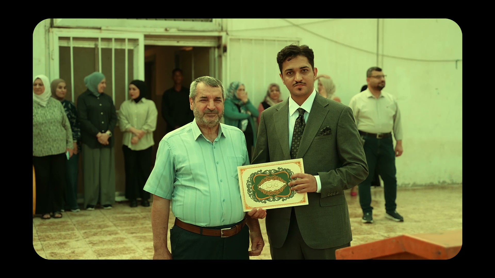

من الإعمار الكوني إلى التمكين المجتمعي: رحلة ستة أسابيع تتوج بالشرعية والمصداقية في إعدادية العامرية للبنين From Cosmic Stewardship to Community Empowerment: A Six-Week Journey Crowned with Legitimacy and Credibility at Al-Amiriya Preparatory School for Boys
٦ تشرين الأول، ٢٠٢٦October 6, 2026
لحظة تسليم كتاب الشكر والتقدير في صحن إعدادية العامرية للبنين
The presentation of the letter of thanks and appreciation in the courtyard of Al-Amiriya Preparatory School for Boys
تزامناً مع انطلاق العام الدراسي الجديد (الموافق 4 أكتوبر 2026)، اختُتمت المرحلة الأولى من مشاريع مبادرة "أرض السواد" البيئية والتنموية بالتتويج الرسمي في صحن إعدادية العامرية للبنين، حيثُ جرى تكريم مؤسس ورئيس المبادرة، الأستاذ أحمد عبد السلام، بكتاب شكر وتقدير قُدّم أمام الهيئة التدريسية وجموع الطلاب.
Coinciding with the start of the new school year (October 4, 2026), the first phase of the environmental and development projects of the "Land of Al-Sawad" initiative concluded with an official recognition in the courtyard of Al-Amiriya Preparatory School for Boys, where the initiative's founder and head, Mr. Ahmed Abdul Salam, was honored with a letter of thanks and appreciation presented before the teaching staff and the assembled students.
جاء هذا التكريم ثمرةً لرحلة عمل ميداني دؤوبة استمرت ستة أسابيع متواصلة؛ شهد الموقع خلالها تحولاً جذرياً شاملاً، بدءاً من حفر بئر السقي لتأمين شريان الحياة المائي، مروراً بإزالة الأنقاض والأشواك المستعصية، وصولاً إلى غرس الشتلات وتأسيس أول مجلس طلابي مستدام يُعنى بالرعاية البيئية داخل المدرسة.
This recognition was the fruit of six continuous weeks of persistent fieldwork, during which the site underwent a sweeping transformation: from drilling an irrigation well to secure a lifeline of water, through clearing rubble and stubborn thorns, to planting saplings and founding the first sustainable student council dedicated to environmental care inside the school.
تأصيل أكاديمي ونموذج للتمكين المجتمعيAcademic Grounding and a Model for Community Empowerment
تستند هذه التجربة في مرجعيتها إلى نموذج تمكين المجتمع (Community Empowerment) المُستوحى من مشروع سلف أطلقه مؤسس المبادرة بالتعاون مع جامعة إيسكس (University of Essex) في المملكة المتحدة؛ بهدف إحداث تغيير ديموغرافي وبيئي إيجابي. وقد حرص الأستاذ أحمد على نقل هذه التجربة الأكاديمية وتطبيقها في العراق، لتمكين الفرد والمجتمع، وعلى رأسهم طلبة المدارس، ليكونوا صُنّاعاً حقيقيين للتغيير والمسؤولية البيئية.
This experience is rooted in the Community Empowerment model, inspired by an earlier project launched by the initiative's founder in cooperation with the University of Essex in the United Kingdom, with the aim of bringing about positive demographic and environmental change. Mr. Ahmed was keen to bring this academic experience to Iraq and apply it there, empowering individuals and the community, school students above all, to become true makers of change and environmental responsibility.
رؤية فلسفية ورسالة كُونيةA Philosophical Vision and a Universal Message
وفي كلمته التي ألقاها أمام الكادر التعليمي والطلاب إثر تسلمه التكريم، استشهد الأستاذ أحمد بالمنطلق الكوني والرباني لنشأة الأرض، مؤكداً أن الله سبحانه وتعالى خلق هذا الكوكب كمجال مادي متوازن ومحكم، صيغت فيه الحياة ليتعايش الإنسان مع أبناء جنسه ومع سائر المخلوقات في سيمفونية من التناغم لا الطغيان. وأوضح أن مبادرة "أرض السواد" لا تنطلق من مجرد حافز تجميلي ظاهري، بل تسعى حثيثاً لمحاكاة هذا المنطلق الرباني من خلال تمكين المجتمع، وتأهيل البيئة التعليمية والمحلية لتكون مساحة حية تليق بأجيالنا القادمة.
In the speech he delivered to the teaching staff and students upon receiving the honor, Mr. Ahmed invoked the cosmic and divine origin of the Earth, affirming that God Almighty created this planet as a balanced and precisely ordered physical realm, in which life was shaped so that humankind might coexist with one another and with all other creatures in a symphony of harmony, not domination. He explained that the "Land of Al-Sawad" initiative does not spring from a merely cosmetic, surface-level motive, but strives earnestly to emulate that divine origin by empowering the community and rehabilitating the educational and local environment into a living space worthy of our coming generations.
الأثر البيئي بالأرقام والعدوى الإيجابيةEnvironmental Impact in Numbers and Positive Contagion
تتجاوز رؤية المبادرة حدود الجمال البصري إلى تحقيق أثر بيئي ومناخي ملموس عبر غرس أشجار أصيلة ومتحملة كـ السدر والألبيزيا؛ حيث تُسهم كل 100 شجرة بالغة منها في امتصاص نحو 2.5 إلى 4 طن من كربون الجو سنوياً، وتوفير ما بين 3 إلى 4.5 طن من الأكسجين الصافي، مع تنقية الهواء من الغبار والجسيمات المعلقة. خلق هذا الأثر البيئي المباشر مفهوم "العدوى الإيجابية"، التي تحفز المناطق والمؤسسات المجاورة على التنافس في خوض تجارب تشجير مشابهة.
The initiative's vision goes beyond visual beauty to achieve a tangible environmental and climatic impact by planting native, resilient trees such as Sidr and Albizia. Every 100 mature trees of these species help absorb roughly 2.5 to 4 tons of atmospheric carbon each year and provide between 3 and 4.5 tons of pure oxygen, while clearing the air of dust and suspended particles. This direct environmental impact has given rise to the idea of "positive contagion," which spurs neighboring areas and institutions to compete in undertaking similar tree-planting efforts.
واقع ميداني وتوثيق رقمي (Geotagging)On the Ground, with Digital Documentation (Geotagging)
حتى اللحظة، أنجزت المبادرة زراعة وتأهيل ما يقارب 150 شتلة متوزعة بين إعدادية العامرية للبنين ومحلة (636) في العامرية. ولضمان الاستدامة الميدانية، تعتمد "أرض السواد" تقنية التوثيق الجغرافي الرقمي (Geotagging) لتحديد إحداثيات كل شجرة وتتبع نموها ونسبة بقائها عبر قاعدة بيانات رقمية دقيقة.
To date, the initiative has planted and rehabilitated nearly 150 saplings distributed between Al-Amiriya Preparatory School for Boys and District (636) in Al-Amiriya. To ensure sustainability on the ground, "Land of Al-Sawad" relies on digital geotagging to record the coordinates of every tree and track its growth and survival rate through a precise digital database.
ثناء واعتراف بالفضل: القيادة التربوية الواعيةPraise and Acknowledgment: Conscious Educational Leadership
ولأن الأفكار النيرة تحتاج إلى بيئة صالحة تُؤويها، أعرَبَ رئيس المبادرة عن أسمى آيات الشكر والامتنان والثناء للأستاذ القدير علي باسم أحمد، مدير إعدادية العامرية للبنين.
Because bright ideas need fertile ground to shelter them, the head of the initiative expressed his deepest thanks, gratitude, and praise to the esteemed Mr. Ali Basim Ahmed, principal of Al-Amiriya Preparatory School for Boys.
والحقُّ يُقال؛ إن ما تحقق على أرض الواقع لم يكن ليرى النور لولا الرؤية التربوية الثاقبة والانفتاح الحضاري الذي أبداه الأستاذ علي؛ حيث احتضن الفكرة منذ لحظاتها الأولى، وذلّل العقبات الإدارية والميدانية بمرونة وتفهم ينمّان عن قيادة تربوية استثنائية تُدرك أن بناء الإنسان وتأهيل البيئة المدرسية هما جبهتان لمهمة نبيلة واحدة. لقد أتاح الأستاذ علي لـ "أرض السواد" فرصة ذهبية حقيقية لإثبات جدارة نموذجها التنموي المستدام في قلب منطقة العامرية، مستحقاً بذلك كل الشكر والتقدير والإشادة.
In truth, what has been achieved on the ground would never have seen the light were it not for the keen educational vision and civic openness shown by Mr. Ali. He embraced the idea from its very first moments and smoothed away administrative and field obstacles with a flexibility and understanding that reflect exceptional educational leadership, one that recognizes that building people and rehabilitating the school environment are two fronts of a single noble mission. Mr. Ali gave "Land of Al-Sawad" a truly golden opportunity to prove the merit of its sustainable development model in the heart of Al-Amiriya, and for that he deserves every thanks, appreciation, and commendation.
استراحة محارب ورؤية خمسية (2026 - 2031)A Warrior's Rest and a Five-Year Vision (2026 - 2031)
تأخذ "أرض السواد" حالياً خطوة إلى الوراء لترتيب صفوفها وتطوير بنيتها التنفيذية، استعداداً لانطلاقة الذروة الميدانية الكبرى في منتصف شهر مارس 2027، والتي تستهدف:
"Land of Al-Sawad" is currently taking a step back to organize its ranks and develop its operational structure, in preparation for its major peak field launch in mid-March 2027, which aims to:
- الوصول إلى 1000 شجرة مع حلول ربيع 2027.
- تحقيق الرؤية الخمسية بزراعة وتوثيق 30,000 شتلة في فضاءات العامرية.
- Reach 1,000 trees by spring 2027.
- Fulfill the five-year vision of planting and documenting 30,000 saplings across the open spaces of Al-Amiriya.
إن ما شهدته إعدادية العامرية للبنين ليس إلا بداية لشرارة وعي وأثر بيئي ملموس ينطلق من العامرية ليمتد إلى سائر مناطق بغداد. نحن في أرض السواد نجدد العهد بأن نكون سفيراً دائماً للعطاء، وأن يظل غرسنا شاهداً على أن الإرادة والجهد الميداني الصادق هما الطريق الوحيد لإعادة الحياة لأرض السواد.
What Al-Amiriya Preparatory School for Boys has witnessed is only the beginning of a spark of awareness and tangible environmental impact that sets out from Al-Amiriya to reach the rest of Baghdad. We at Land of Al-Sawad renew our pledge to remain a lasting ambassador of giving, and to let what we plant stand as proof that determination and sincere fieldwork are the only way to bring life back to the Land of Al-Sawad.
أرض السواد.. غرسٌ يورق، واستدامةٌ تثمر.
Land of Al-Sawad: planting that comes into leaf, and sustainability that bears fruit.